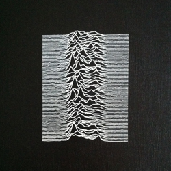
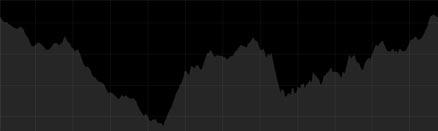

 If you talk about Data Visualization and album covers in the music culture there is a cover that is one of if not the most representative of these two fields. We talk about the cover for Joy Division’s Unknown Pleasures album, who became an iconic image to represent the band.
This album cover has an interesting history behind. The graphic is a data display and his creator Peter Saville, describes it as a "comparative path demonstration of frequency from a signal of a pulsar. Each horizontal line, reaching a series of peaks close to the middle of the graph, is observed data from a this pulsar, and there are several of them stacked together. Saville goes on, "What you’re seeing is a comparative chart of the frequency and the accuracy of this signal."
I was fascinated about this story when I discovered it through this excellent post on Scientific American blog, so I wanted to experiment with this pulsar visualization, creating one by my own with data more related to my daily life. I quickly found a metaphorical correlation between a pulsar and me: In fact like a pulsar which emits signals periodically due to several phenomenons, I change my normal activity when my sedentary life stops and I start my trail running workouts.
 Here every path is the workout itself, plotting elevation changes and total distance. Stacking all the workout paths then the trail activity emerges even showing some patterns, as the average distance and the shape generated from elevation changes of all the trail rides. Adding some signal noise before each track helps to emulate the original pulsar plot and also is a way to communicate the idea of the change in the individual activity.